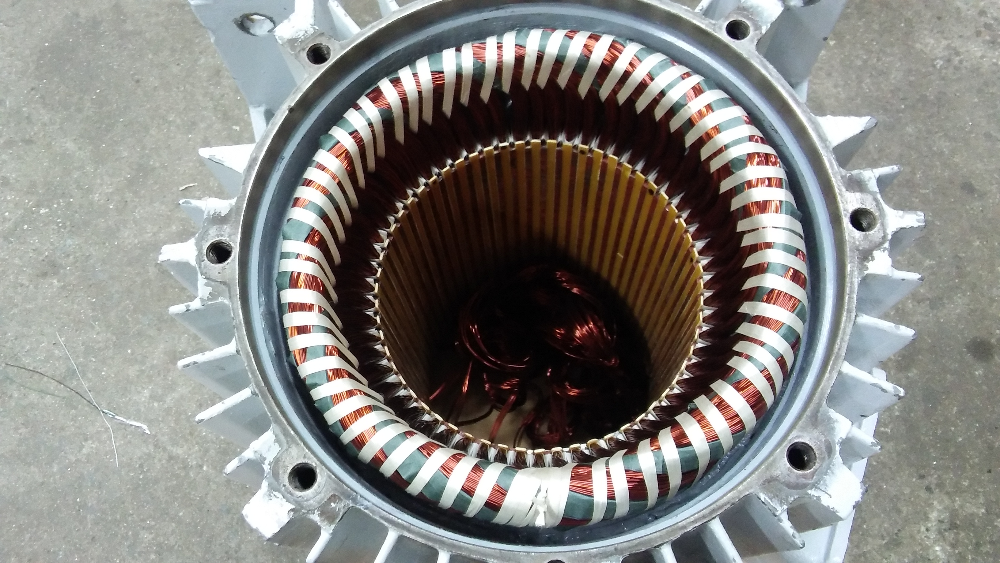
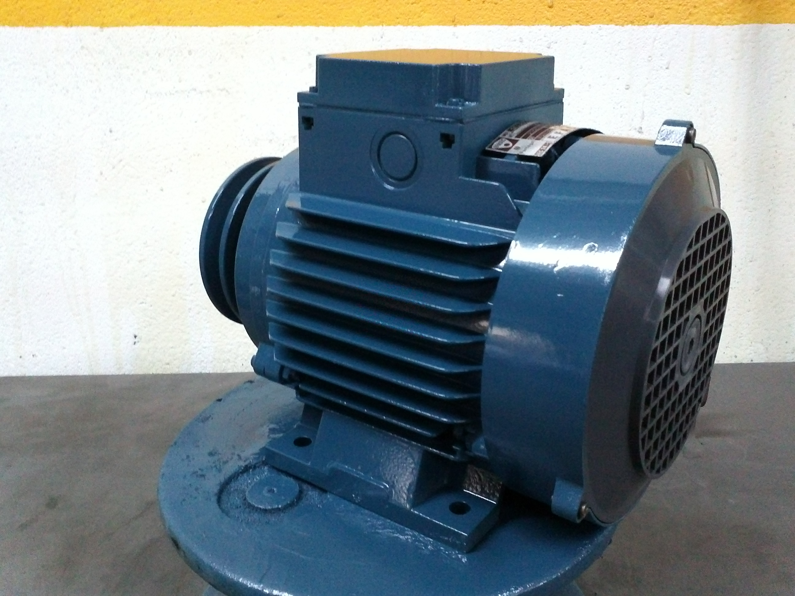
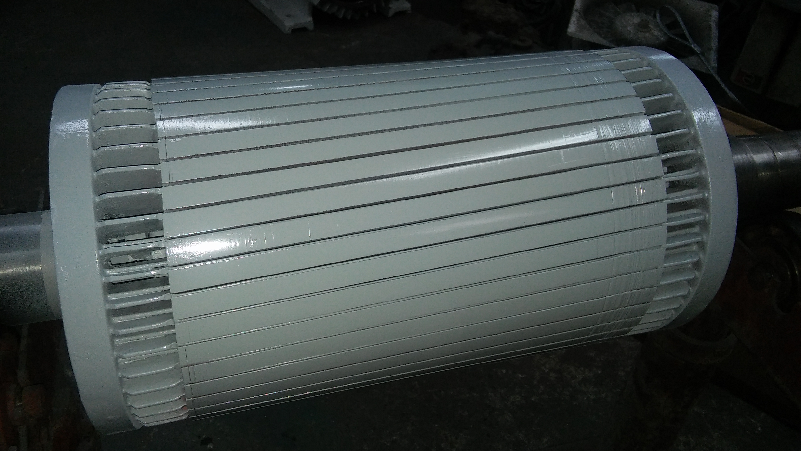

01 / Reconhecer o equipamento
A escolha mostra uma fotografia e as intervenções dessa área. O visitante encontra um ponto de partida concreto antes de contactar a oficina.
Motores, bombas, ventiladores e máquinas. Explore os serviços da REIER a partir do equipamento que precisa de atenção.
Encontrar o meu equipamento
Escolha uma área para conhecer as intervenções publicadas e preparar os elementos úteis para a primeira conversa.

Bobinagens e beneficiações de motores e bombas. A avaliação de cada equipamento é feita pela REIER.
Escolhas temporárias. Esta demonstração não recolhe contactos nem envia pedidos.
A galeria da REIER já mostra motores, bobinagens e equipamentos. A proposta junta essas imagens aos serviços correspondentes, para que cada fotografia ajude a perceber o que pode ser tratado.
Conhecer o website oficial
No website atual, a galeria e a lista de serviços apresentam o trabalho da REIER em zonas distintas. Nesta proposta, aproximo as duas para que o visitante comece pelo seu equipamento.
A escolha mostra uma fotografia e as intervenções dessa área. O visitante encontra um ponto de partida concreto antes de contactar a oficina.
A checklist indica informação que pode ajudar a descrever o equipamento. O resumo é temporário e não faz diagnósticos, marcações ou envios.
Proponho filmar a equipa a avaliar, rebobinar e testar um motor que possa ser mostrado. Uma explicação curta ligaria o detalhe da fotografia ao trabalho realizado.
Na Canvas, fiz a filmagem, a edição e a integração do filme no website. O trabalho da oficina e os acabamentos podem ser vistos junto da apresentação da empresa.
Ver o projeto CanvasSou o Ricardo. Produzo filmes e desenvolvo websites. Esta demonstração mostra a ideia; os conteúdos finais, as filmagens e o âmbito seriam definidos convosco.
Falar com o RicardoWhatsApp · +351 918 989 790
Rua Alfredo Cunha, 333-A · Matosinhos
+351 229 398 680reier.matosinhos@gmail.comContactos reais da empresa. O resumo desta demonstração não lhes é enviado.